Next: IIR Filter Up: Causal Signal Processing Previous: Signal Detection Contents
We need to derive how the error can change the FIR filter
coefficients so that the error is actually minimised. This can be
expressed as a so called “gradient descent” which minimises the squared
error
 because both a positive and a negative
error are equally bad:
because both a positive and a negative
error are equally bad:
 is the change of the coefficient 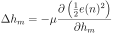 at
every time step:
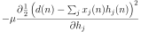. 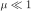
defines how quickly the coefficients 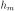 change at every time step
and is called the “learning rate”. Note here the change in notation
of the FIR filter coefficients which are changing much
slower than the sampled signals 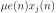 and and
can still be seen as constant for the realtime filtering
operation. Thus, we have 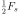 for the sample by sample processing as
before and the index of for the very slowly changing FIR
filter coefficients. To gain some intuition why
Eq. 145 mimimises the error we look at what happens if we
increase the FIR coefficient a little bit, for example, by the
small amount of
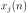:
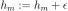. Then we can
observe two cases:
is the change of the coefficient 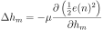 at
every time step:
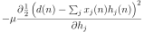. 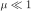
defines how quickly the coefficients 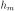 change at every time step
and is called the “learning rate”. Note here the change in notation
of the FIR filter coefficients which are changing much
slower than the sampled signals 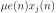 and and
can still be seen as constant for the realtime filtering
operation. Thus, we have 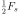 for the sample by sample processing as
before and the index of for the very slowly changing FIR
filter coefficients. To gain some intuition why
Eq. 145 mimimises the error we look at what happens if we
increase the FIR coefficient a little bit, for example, by the
small amount of
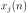:
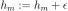. Then we can
observe two cases:
 increases so we need to decrease as it makes it worse.
decreases so we need to increase as it makes it better.
increases so we need to decrease as it makes it worse.
decreases so we need to increase as it makes it better.
Eq 145 now needs to be turned into a form which can directly run in software by
solving its partial derivative by inserting Eqs. 144 and 112.
 emerges because
of the chain rule when partially differentiating the output
which depends on the sum of the delay lines of the FIR
filter (see Eq 112). Eq. 149 is now our “learning”
rule which can simply be applied to the FIR filter as showm in Fig 20B.
emerges because
of the chain rule when partially differentiating the output
which depends on the sum of the delay lines of the FIR
filter (see Eq 112). Eq. 149 is now our “learning”
rule which can simply be applied to the FIR filter as showm in Fig 20B.
Now we have the recipe of an adaptive filter where the FIR filter minimises its
own error in a negative feedback loop and generating an output
which is as closely as possible to the desired signal . The signal
is often called “the remover” as it cancels out the signal .
In this respect the error signal is not just an error signal but it's
a signal where has been removed. Thus, this adaptive filter can be
used to filter out noise from a signal  if we get hold of reference
noise and feed it into .
if we get hold of reference
noise and feed it into .
Imagine you want to remove 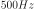 Hz mains from the signal then one
would provide the Hz mains as so that then the filter
learns to remove the powerline interference. At first counter-intuitive, the signal
is then the output of the filter where the Hz has been
removed.
github / contact
 (
( (
(